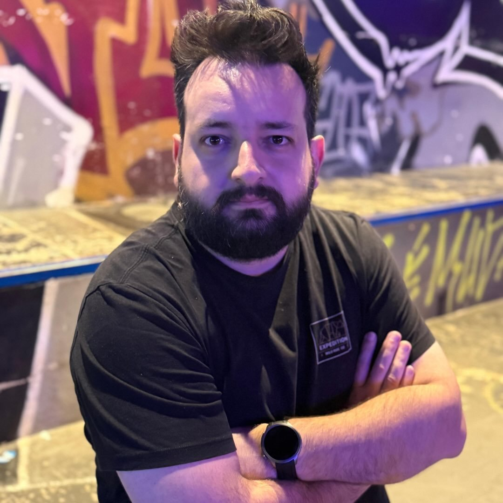
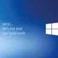
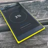

Estruturo interfaces digitais para escalar com consistência.
Sou UI Engineer, com 15 anos unindo design e desenvolvimento: do conceito visual ao código em produção, com Design Systems, React e TypeScript.
O Design System que criei na DTP está em uso diário há mais de 10 anos e economiza cerca de 520 horas por ano da equipe. Também montei do zero o departamento de TI de uma empresa e liderei o de design de outra.
Em 2016, um conceito meu de UX para o Windows 10 Mobile foi reconhecido pela Microsoft.
Hoje, com a Paluan, ajudo startups a construir a base de design e front-end para crescer sem retrabalho.
Escritos recentes
-

shhh... let's not leak our hard work – o wallpaper mais simples (e mais baixado) que já fiz Achei uma frase interna das builds do Windows 8, combinei com o wallpaper do Windows 10 e o resultado passou de 30 mil downloads no WallpaperHub. -

Redesenhando a tela de atualização do Windows 10 Mobile Em 2016 redesenhei a tela de atualização do Windows 10 Mobile para unificá-la com o desktop, e um funcionário da Microsoft respondeu em 14 minutos. - Por que resolvi começar a escrever Um espaço para organizar ideias e registrar aprendizados.